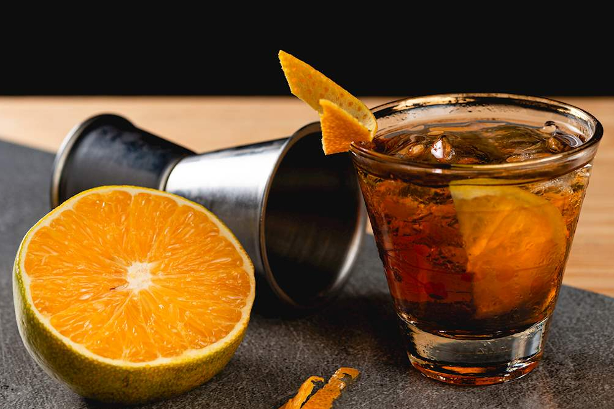

Rabo de Galo

Ingredientes:
50 ml de cachaça
50 ml de vermute tinto
1 dash de bitter de laranja
Gelo
Casca de laranja para decorar (opcional)
Modo de preparo:
Encha um copo misturador com gelo.
Adicione a cachaça, o vermute tinto e o dash de bitter de laranja no copo misturador.
Mexa suavemente os ingredientes com uma colher de bar por cerca de 20 a 30 segundos para misturar bem e resfriar a bebida.
Encha um copo baixo com gelo fresco.
Use um coador para despejar o coquetel no copo.
Se desejar, decore o coquetel com uma casca de laranja torcida para liberar os óleos cítricos.
Sirva imediatamente e desfrute do seu Rabo de Galo!
O Rabo de Galo é um coquetel brasileiro robusto e cheio de sabor. Se preferir um sabor mais equilibrado, você pode ajustar
as quantidades dos ingredientes de acordo com seu gosto pessoal. Experimente e encontre a proporção ideal para você.
Aproveite seu Rabo de Galo!